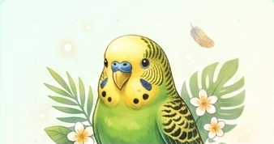
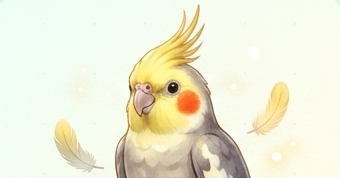
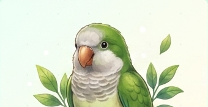
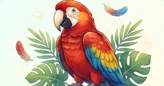

認識這些聰慧可愛的羽毛朋友，開啟您的飼養之旅
探索這些迷人的羽毛朋友的獨特特質
鸚鵡具有令人驚嘆的學習能力，智力相當於 4-5 歲的孩子。牠們能學習語言、理解簡單指令，甚至可以辨別顏色和形狀。
鸚鵡是高度社交化的動物，渴望與主人互動和陪伴。牠們會表現出感情，形成深厚的情感聯繫，是優秀的伴侶。
鸚鵡擁有世界上最美麗的羽毛，顏色從翠綠到鮮黃、深紅等各種絢麗色彩，每一隻都是自然藝術的傑作。
認識四種適合初學者的鸚鵡品種

體型小巧可愛，顏色豐富多彩。性格活潑好動，叫聲響亮，適合家庭飼養。壽命 5-8 年，是入門首選。

頭頂有優雅的黃色冠羽，面頰帶紅色。性情溫和，叫聲優美，喜歡吹口哨。壽命 15-20 年。

綠色與黃色相間，體型中等。性格聰慧活潑，學習能力強，會學習說話。壽命 20-30 年。

體型最大，羽色絢麗，以紅色和黃色為主。性格溫和但需要充足空間。壽命可達 50 年以上。
照顧好您的羽毛朋友，需要注意這些要點
提供高品質的鸚鵡飼料、新鮮蔬果和堅果。定期供應蘋果、胡蘿蔔、葡萄等。避免鹽份、油脂和巧克力。確保每日有乾淨飲水。
提供寬敞舒適的鳥籠或飛行室。保持室溫 20-25°C，避免太陽直射。定期清潔環境，提供棲木和玩具。避免煙霧和有害氣體。
鸚鵡需要每日 2-4 小時的互動時間。提供各種玩具以保持心智活躍。與牠們交談、唱歌或教牠們技巧。充足的陪伴能提升牠們的幸福感。
避免讓鸚鵡接觸農藥、香氛劑和非粘性炊具。定期檢查健康狀況，異常行為應立即就醫。不要暴露在極端溫度。建立安全的活動空間。
每次點擊都會獲得一則有趣的鸚鵡知識
點擊上方按鈕或按 Enter 鍵，發現鸚鵡的有趣知識！